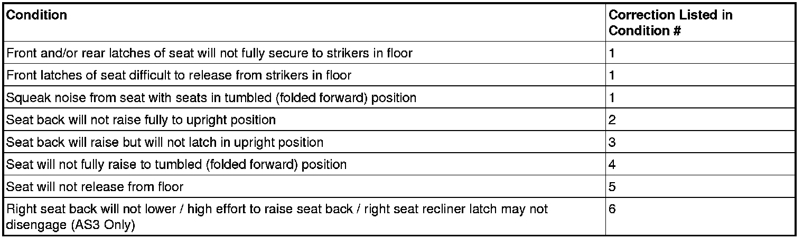

Condition/Cause/Correction # 1

Condition 1
Front and/or rear latches of seat will not fully secure to the strikers in floor.
Front latches of seat difficult to release from strikers in floor.
Squeak noise from seat with seats in tumbled (folded forward) position.
Cause 1
This condition may be caused by one or more of the following conditions:
- Excessive body sealer below the floor striker, causing interference with the front seat latch during installation.
- The plastic carpet escutcheon (track cover) may not be properly seated to the floor strikers.
- The metal seat roller bar near the front underside of the seats may be contacting the plastic seat carpet escutcheon.
- The seat front floor latches may be in the tumble position, and/or the seat roller bar may be twisted or out of sync, causing the latches to be out of sync.
Correction 1
Inspect valley below floor strikers:
1. Inspect the valley below the floor striker for the presence of excessive body sealer (1).
2. If the sealer (1) is making contact with the seat roller, remove the excessive sealer to allow the latch to fully seat to the striker.
Inspect carpet escutcheon to floor striker fit:
1. Visually inspect the carpet escutcheon to see if it is correctly seated to the floor strikers. An improperly seated escutcheon (2) is shown. There are three escutcheons for the third row. Inspect each escutcheon.
2. Fully seat the plastic seat escutcheon into the correct position to the strikers, as necessary. (It may be necessary to protect the escutcheons and use a rubber mallet to provide force for seating.)
Inspect seat roller bar to carpet escutcheon fit:
1. With the seat in the tumbled (folded forward) position, visually inspect to determine if there is contact (1) between the metal seat roller bar and the plastic carpet escutcheon.
2. If contact is present, first ensure the carpet escutcheons have been inspected and fully seated, (mentioned previously). Next, verify the customer concern: With the seat still in the tumbled position, wiggle the seat; push the seat outboard while wiggling. Listen for squeak noises. Observe for contact wear witness marks on the carpet escutcheons.
3. Remove both third row seats using seat removal handle #3 Only, pull straight rearward (do not lift) to slide seat back and remove.
4. If there was contact between the seat roller bar and carpet escutcheon, with the escutcheons fully seated, note the location of contact or witness marks (3) on the roller bar.
5. Cut two pieces of 30 mm x 40 mm (1.2 in x 1.6 in) flock tape. Use polyester 0.8 mm (0.031 in) thick flock (or felt) tape *Such as Kent Industries Part # KT13486.
6. Apply tape to the inboard angled section of the seat roller bar (4). Make sure that the seam (gap when wrapping tape around bar) of this tape is NOT at the contact area/witness mark noted previously. Install tape to both seats.
7. Install both seats. With the seat folded and laying flat on the cargo area floor, using two hands on the seat (not release handle #3), roll the seat into position and allow the front latches to drop and secure into place, just under the weight of the seat itself. Press down firmly on the top rear of the seat to ensure the rear latches are fully secured.
8. Verify that the customer concern has been eliminated. Inspect to be sure that any contact areas on the seat bar are covered by flock tape (5).
Inspect seat latches and seat roller bar:
1. Remove the seat. Using seat removal handle #3 Only, pull straight rearward (do not lift) to slide seat back and remove.
2. Place the seat on its back so the latches are visible. The above image shows the latches in the correct position.

3. Inspect the latches to ensure they are not in the tumble position. The above image shows the latches in the tumble position.
4. If the latches are in the tumble position, place the seat in an upright position on a firm surface. With the back folded down, pull up on the tumble lever #2 while pushing down on the seat to reset the latches.
5. If the front floor latches are in the correct position and the condition still exists, visually inspect the seat roller bar (1) for a twisted or out of sync condition. The roller bar (1) is straight in the above image.
Note
If the seat roller bar is twisted or out of sync, replace the roller bar, do Not replace the complete latch assembly.
6. If the seat roller bar (2) appears to be twisted or out of sync, as shown in the above image, replace the roller bar (2).
7. To replace the roller bar (1), remove the two Torx (2) bolts and remove the roller bar.
8. Ensure the latches are properly aligned, then install the new roller bar and tighten the bolts.
Tighten
Tighten the two Torx bolts to 16 Nm (12 lb ft).
9. Verify proper seat operation:
1. Install the seat. With the seat folded and laying flat on the cargo area floor, using two hands on the seat (not release handle #3), roll the seat into position and allow the front latches to drop and secure into place, just under the weight of the seat itself. Press down firmly on top rear of seat to ensure the rear latches are fully secured.
2. Raise the folded seat up to the tumbled position: Lift and hold lever #2 Only (do Not grasp seat removal handle #3, as this may partially disengage the front latches), until the seat is about 1/2 way up.